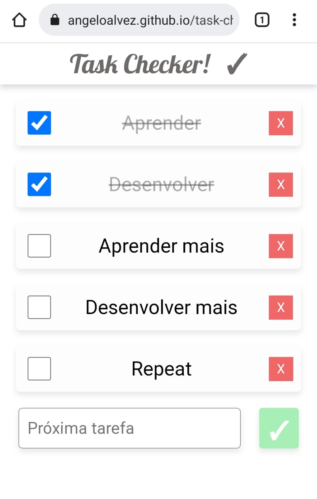

-
Task Checker!
Aplicação para controle de tarefas, feita do zero em HTML, CSS e Javascript.
-
nCazé
Extensão do Google Chrome para pregar uma peça em seus amigos/familiares.
Com a nCazé ativada, todas as imagens da web serão trocadas por imagens do Casimiro Miguel,
grande streamer brasileiro.